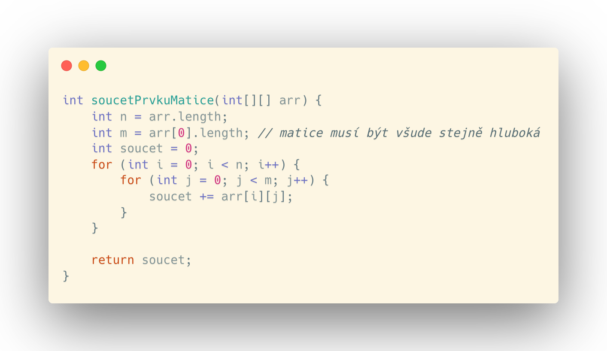
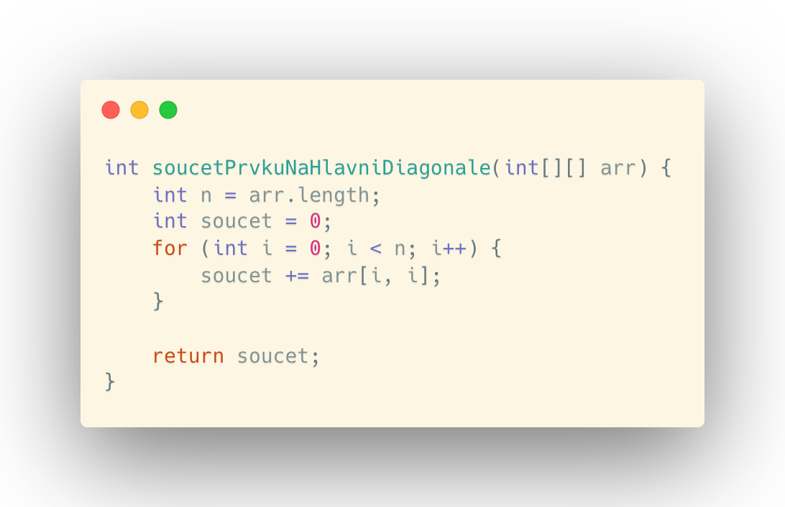
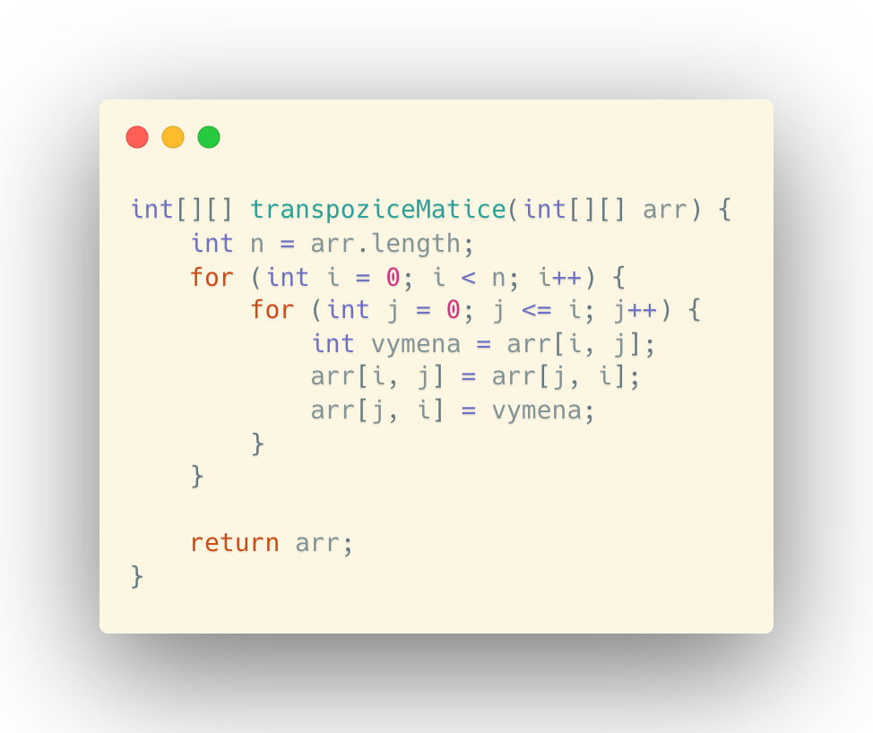

V této kapitole se podíváme na základní operace s maticemi.
ZÁKLADNÍ POZNATKY
Matice je v programování reprezentována dvojrozměrným polem, jehož první rozměr reprezentuje x souřadnici matice (řádky) a druhý rozměr reprezentuje y souřadnici matice (sloupce). Šířku matice označujeme písmenem n a výšku matice písmenem m.
Hlavní diagonála matice je pomyslná úholpříčka vedoucí z prvku [0, 0] do prvku [n-1, m-1].
Vedlejší diagonála matice je pomyslná úholpříčka vedoucí z prvku [n-1; 0] do prvku [0; m-1].
Transpozice
ALGORITMY MATIC
Součet prvků v matici
Součet prvků v matici lze udělat v čase O(n2). Procházíme pole po x souřadnici. Při tom procházíme také y souřadnici matice. V tomto průchodu do počítadla přidáváme hodnoty v matici na aktuálních indexech. Na konci programu vrátí metoda zmíněné počítadlo.
Součet prvků na hlavní diagonále
Součet prvků na hlavní diagonále matice lze udělat v lineárním čase O(n). Procházíme pole do šířky a do počítadla vkládáme hodnotu na pozicíh [i; i] - viz obrázek.
Transpozice matice
Tento algoritmus má kvadratickou asymptotickou složitost O(n2). Algoritmus prochází matici do šířky. Zároveň do hloubky do aktuální x souřadnice. Proběhne výměna prvků [i; j] <=> [j; i] a program pokračuje dále.
